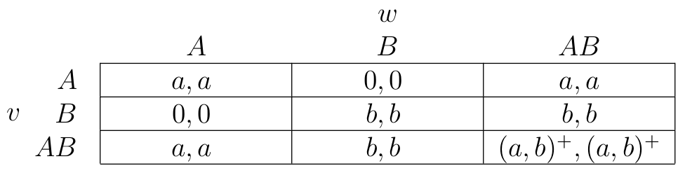
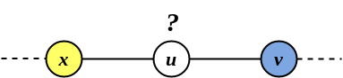

AR - Lesson 11
Lezioni predenti collegate:
1 Processi di diffusione in presenza di Compatibilità
Nelle lezioni precedenti abbiamo visto come un gioco di coordinazione molto semplice possa portare ad una vasta quantità di domande e relative analisi non banali.
Una prima generalizzazione è stata passare da un modello omogeneo, in cui tutti i nodi traevano uno stesso vantaggio dall'adottare una nuova tecnologia A,
ad uno eterogeneo, in cui ciascuno individuo ricava un personale guadagno dall'adottare l'innovazione.
In tutti i modelli analizzati però si assumeva la mutua esclusione degli stati A-B.
In un contesto reale però succede spesso che due stati coesistono in un individuo.
Ad esempio, A e B potrebbero essere lingue diverse che coesistono lungo un confine nazionale,
oppure A e B potrebbero essere due applicazioni di messaggistica differenti.
Infatti gli individui che si trovano al confine tra un'area in cui prevale A ed una in cui prevale B, conviene adottare entrambi gli stati essere "bilingua".
Adottare però due stati contemporaneamente può comportare un costo aggiuntivo non trascurabile.
Un individuo sceglie di utilizzare entrambi i comportamenti disponibili, barattando la maggiore facilità di interazione con persone di più tipi,
contro il costo di dover acquisire e mantenere entrambe le forme di comportamento (cioè i costi di dover imparare una lingua aggiuntiva, mantenere due diverse versioni di una tecnologia e così via …).
Un'oservazione da fare riguardo il costo del "bilinguismo", è che tale effort1 viene pagato una sola volta.
Perciò, se si è in contatto con tanta gente nello stato A ed altrettanta nello stato B, potrebbe convenire adottare il doppio stato AB,
in qunato il guadagno ricavato sarebbe molto maggiore dell'unico costo che pago nell'avere il doppio stato:
il gioco ne vale la candela.
Modellando in maniera più formale, possiamo definire un nuovo coordination game in accordo alla seguente tabella

Figura 1: Nuovo coordination game con opzione di doppio stato (bilingua).
dove con \((a,b)^+\) si indica il massimo tra \(a\) e \(b\).
Indichiamo ora con \(V_A, V_B, V_{AB}\) l'insieme dei nodi negli stati A, B e AB rispettivamente, i quali compongono una partizione dell'insieme \(V\) di tutti gli individui.
Perciò, fissando con \(c \geq 0\) il costo di adozione del doppio stato AB, possiamo dire che il guadagno complessivo del nodo \(u\) che adotta AB è pari a
\[
\Big(\sum_{v \in N(u) \cap V_A} a\Big) + \Big(\sum_{v \in N(u) \cap V_B} b\Big) + \Big(\sum_{v \in N(u) \cap V_{AB}} (a,b)^+\Big) - c
\]
Indichiamo quindi con \(p_A(u), p_B(u), p_{AB}(u)\) i rispettivi guadagni che ha il nodo \(u\) nell'assumere gli stati A, B o AB come segue
Analizzeremo ora il processo di diffusione nel nuovo modello con compatibilità, e cercheremo di capire in quali situazioni si ha una cascata completa dei diversi stati.
[FARE ESEMPIO SU CATENA]
1.1 Analisi
Dalle precedenti lezioni sappiamo che nel modello omogeneo, A non si diffonde su reti infinite di grado finito se la sua soglia d'adozione è \(q > \frac{1}{2}\),
ovvero se \(a\) non è almeno pari al valore di \(b\).
Uno studio di Kleinberg del 2007 ha invece dimostrato uno strano comportamento riguardo il modello con compatibilità, ovvero che:
Asi diffonde facilmente se \(a\) è parecchio più grande di \(c\) (ragionevole)Afa fatica a diffondersi se \(c\) è parecchio grande rispetto ad \(a\) (ragionevole)Afa fatica a diffondersi anche se \(c\) non è molto grande rispetto ad \(a\) (strano)
Analizziamo cosa succede nella rete infinita più semplice, la catena infinita \(\mathbb{Z}\).
Dato che fare un'analisi su tre parametri \(a,b,c\) risulta molto complessa, conviene normalizzare \(b\) ad 1, e quindi descrivere il processo
solo in funzione di \(a(b) = a\) e \(c\).
Perciò, in questo modello semplificato (ma non meno espressivo) la soglia d'adozione di A sarà
\[
q(b) = q = \frac{1}{a+1}
\]
Consideriamo un generico nodo \(u\) come nell'esempio in figura succesiva, il quale ha un vicino in \(V_A\) e l'altro in \(V_B\).

Figura 2: Il nodo \(u\) deve scegliere quale stato conviene adottare.
Avremo che guadagni nell'adottare uno stato sono
\begin{align*} p_A(u) &= a\\ p_B(u) &= 1\\ p_{AB}(u) &= a + 1 - c \end{align*}
Sicuramente \(u\) assume A se \(p_A(u) \geq p_B(u)\) e se \(p_A(u) \geq p_{AB}(u)\)
Invece, \(u\) rimane nello stato B se \(p_B(u) > p_A(u)\) e se \(p_B(u) > p_{AB}(u)\)
Infine, \(u\) adotta il bilinguismo AB se \(p_{AB}(u) > p_A(u)\) e se \(p_{AB}(u) \geq p_B(u)\)
[DA FINIRE…]
Note a piè di pagina:
sforzo.